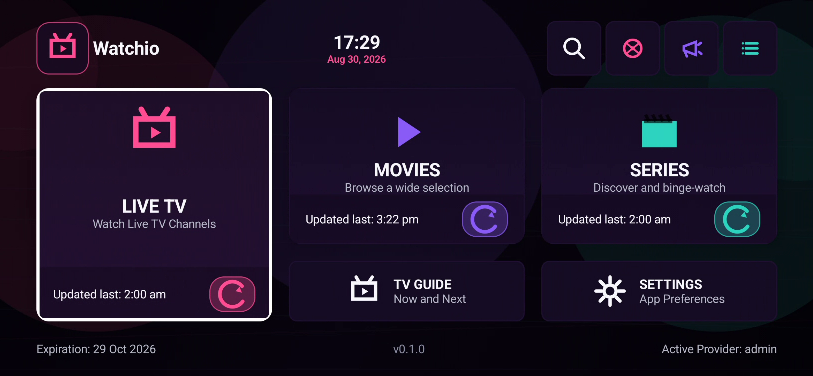
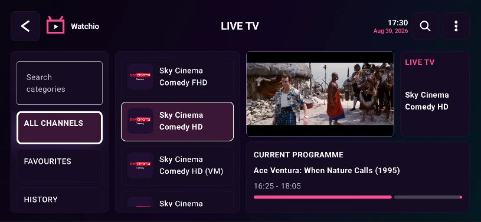
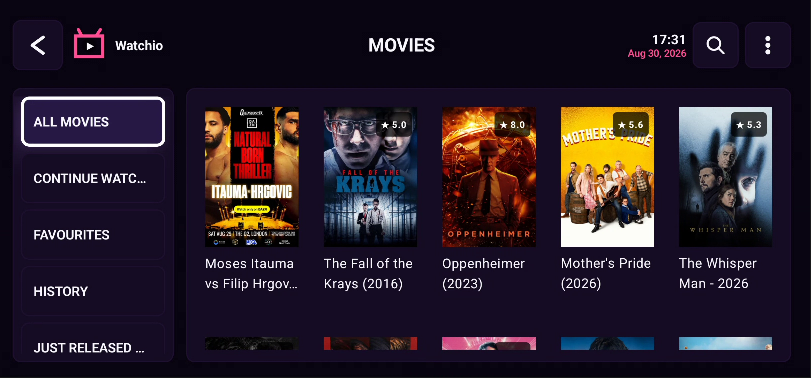
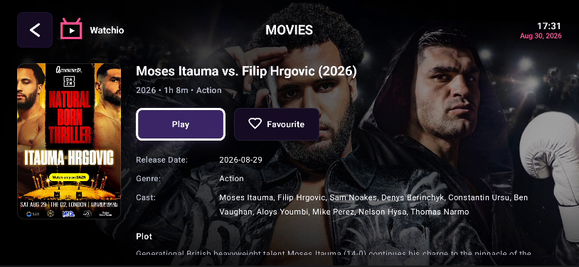
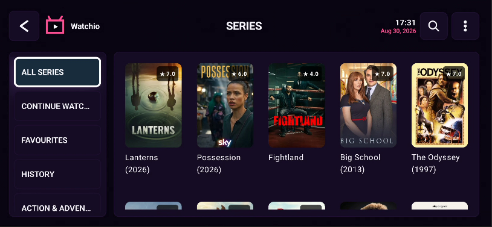
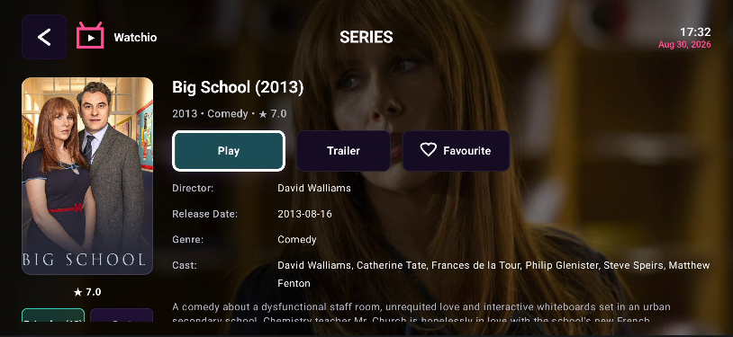
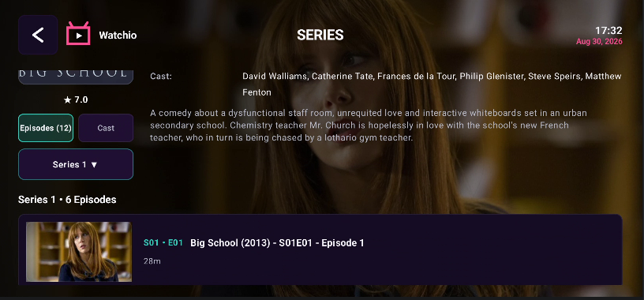

Big-screen first
Designed for TV remotes, clear focus states, and readable viewing from across the room.
IPTV player in development
A dark, fast, neon-styled IPTV experience built for living room screens, Android devices, and Windows desktops.

Core experience
Public site only. No private app source, keys, provider data, or internal implementation details are included here.
Designed for TV remotes, clear focus states, and readable viewing from across the room.
Prepared for electronic program guide workflows with calm, scan-friendly layouts.
Near-black panels, neon accents, and high-contrast controls for fast navigation.
Targeting Android TV, Fire TV, Android phones/tablets, and Windows desktop.
Supported platforms
Remote-first layout for Google TV and Android TV devices.
Planned support for Firestick and Fire TV living room setups.
Phone and tablet layouts for touch-first viewing and account setup.
Desktop-ready experience for larger monitors and keyboard/mouse use.
Screenshots
Early Watchio interface captures from the current development build. Public-safe visuals only.






IPTV compatibility
Watchio is intended as a player interface. It does not provide TV channels, subscriptions, streams, or copyrighted content.
Planned account-style playlist support for compatible providers.
Playlist URL/file workflows planned for public release builds.
Program guide metadata support planned where providers supply valid EPG data.
Development status
Watchio is not publicly released yet. Downloads will appear here only when stable public builds are ready.
Branding, navigation, and device layouts being refined.
Validation planned across TV, mobile, tablet, and desktop form factors.
Downloads and install notes will be added after release approval.
Downloads
Official Watchio downloads are not available yet. This area is reserved for future public builds only.
FAQ
No. Watchio is a player. Users must use their own legal IPTV playlist or provider credentials.
Not yet. Public downloads will be added only when stable builds are ready.
No. This repository contains website files only. The app source remains private and separate.
Xtream Codes, M3U playlists, and XMLTV/EPG metadata are planned compatibility areas.
This website is a static public information page. It does not collect IPTV credentials, playlist URLs, payment details, or app account information.
Watchio is intended for lawful playback of user-provided content. Watchio does not host, sell, provide, or endorse unauthorized streams, channels, or copyrighted content. Users are responsible for ensuring they have rights to access any content they play.